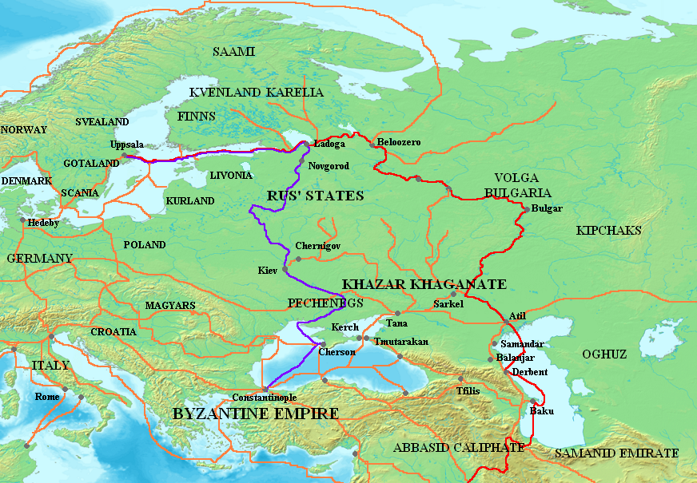
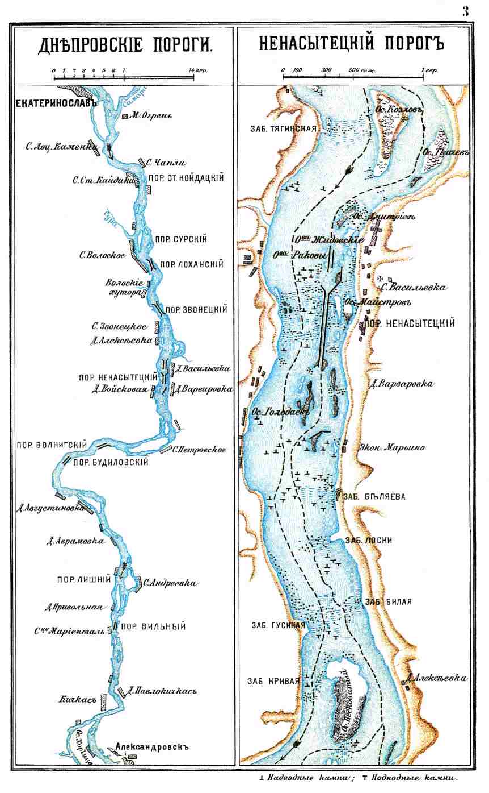
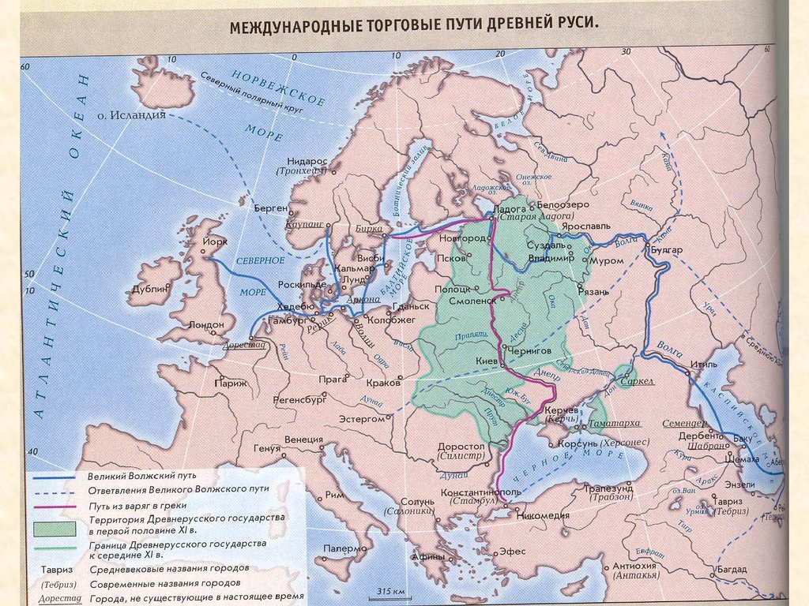

Торговый путь «из варяг в греки»
Артерия Древней Руси
Торговый путь «из варяг в греки» — великий водный маршрут, соединявший Скандинавию и Прибалтику с Византией через систему рек Восточной Европы. Этот путь имел колоссальное значение для формирования Древнерусского государства: вдоль него располагались ключевые города (Новгород, Смоленск, Любеч, Чернигов, Киев), и контроль над ним был основой экономического и политического могущества Киева [[28]].
Путь проходил по рекам и волокам: из Балтийского моря по реке Неве → Ладожское озеро → река Волхов → озеро Ильмень → река Ловать → волок до реки Днепр → по Днепру через пороги → Чёрное море → Константинополь [[34]].

Товары торговли
- Из Руси в Византию: меха (соболь, куница, белка), воск, мёд, лён, пенька, кожи, рабы, лес, янтарь
- Из Византии на Русь: ткани (шёлк, парча), вина, пряности, ювелирные изделия, иконы, книги, стекло, оружие, предметы роскоши
- Транзитные товары: арабское серебро, восточные специи, китайский шёлк
Значение пути
Торговый путь «из варяг в греки» был не только экономической артерией, но и каналом культурного обмена. По нему на Русь проникали христианские миссионеры, византийские мастера-строители, иконописцы, книги. Именно этот путь связал разрозненные славянские племена в единое государство и определил его южную ориентацию — на Константинополь, а не на Западную Европу [[30]].
Контроль над днепровскими порогами — наиболее опасным участком пути — был предметом постоянной борьбы между Русью и кочевниками (печенегами). Князь Святослав погиб именно здесь, возвращаясь из похода на Балканы [[8]].
Города на пути
Крупнейшие города, возникшие вдоль торгового пути:
- Новгород — северная столица
- Смоленск — ключевой перевалочный пункт
- Любеч — контроль над Днепром
- Киев — главная столица Руси
- Чернигов — южный форпост
- Переяславль — защита от кочевников
Опасности пути
Путешествие по пути «из варяг в греки» было опасным:
- Днепровские пороги — 7 опасных порогов
- Нападения печенегов и других кочевников
- Сложные волоки между реками
- Штормы на Чёрном море
- Болезни и голод в пути

Дискуссия о существовании пути
Современные историки дискутируют о масштабах и значении пути «из варяг в греки». Некоторые исследователи считают, что этот путь был менее важен, чем традиционно предполагалось, и что основную роль играла торговля с арабским Востоком через Волжский путь [[31]].
Другие историки подчёркивают, что путь «из варяг в греки» имел не только экономическое, но и огромное культурно-политическое значение, определив цивилизационный выбор Руси.
Другие торговые пути Древней Руси
- Волжский путь: из Балтики через Волгу в Каспийское море и далее в арабские страны
- Янтарный путь: из Прибалтики в Средиземноморье
- Соляной путь: из Галиции в центральные районы Руси
- Шёлковый путь (северный вариант): транзитная торговля с Востоком
